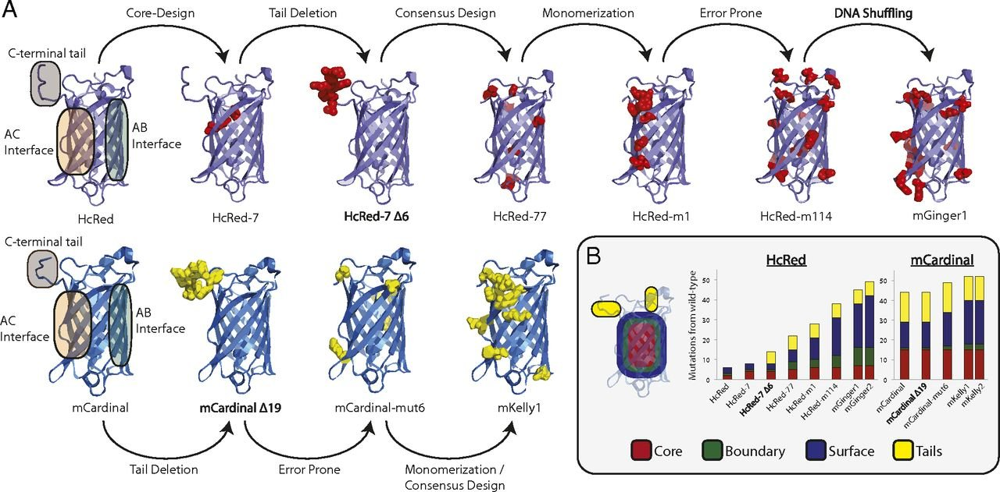

I am a current PhD student at MIT advised by Pulin Li, a member of the Whitehead Institute. My research focuses on how we represent biological perturbation problems meaningfully in AI/ML approaches and create tools that illuminate aspects of biology that were not previously possible.
Much of my graduate work has focused on predictively modeling stem cell engineering and identifying which combinations of perturbations drive cells into desired states. I am broadly interested in expanding and using the uncertainty quantification toolbox to better understand the properties of ML models in biology.
I have enjoyed working with many collaborators throughout my PhD, most notably at Kira Learning, GC Therapeutics, and Microsoft Research New England.
Before starting my PhD, I was a research associate at Twist Bioscience and received my BS from Caltech.

* presenter